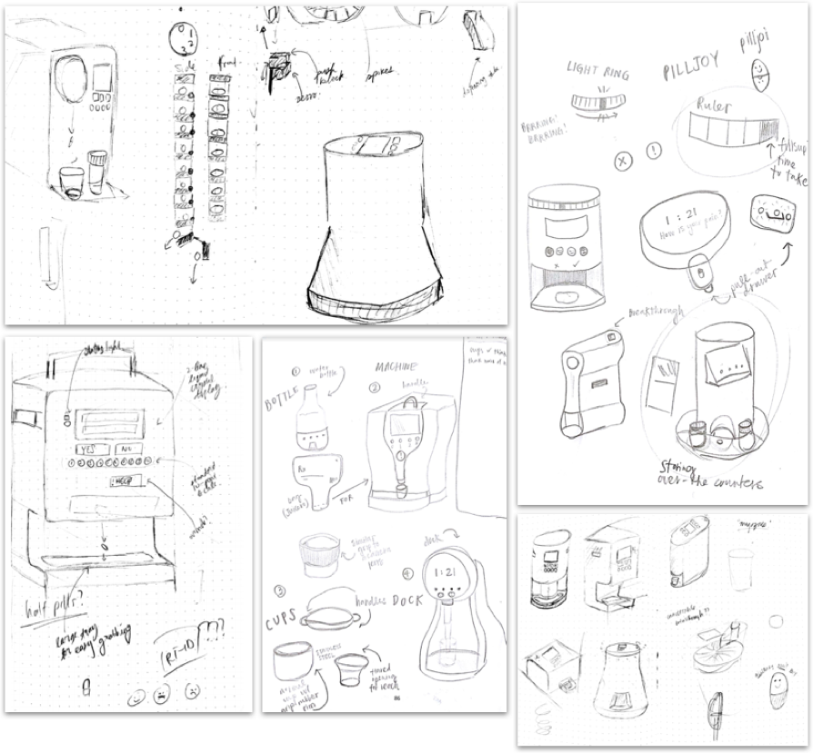

After surgery, patients are often given a generous prescription for powerful yet addictive opioid-based analgesics (painkillers). Unlike the experience in a controlled hospital environment, at home, patients are suddenly faced with the need to regulate their own pain medication while they recover. The combination of over-prescription [1], ineffective self-regulation [2], and a lack of awareness of drug return practices [2] has resulted in an opioid crisis that has claimed more than 42,000 deaths and two million cases of opioid abuse in 2016 alone1.
How can we support and improve mindful and data-informed post-operative pain management to maximise patient comfort while deterring medication abuse?

An existing patient-controlled analgesia (PCA) device.
In this figure, the existing, IV-based PCA (patient-controlled analgesia) device is shown. The device is integrated into an IV drip, and the blue remote is used by a patient to dispense analgesia on demand, within specific parameters 1.
In order to address the problem effectively, an understanding of the underlying problems was needed. In order to do this, the team first conducted preliminary research into the causes of the opioid epidemic. This was done by speaking with the professional medical stakeholders, online research, and preliminary analysis of academic research in this space.
Through this research, a basic context was established around the issues, the environmental factors, the limitations that medical professionals and patients face, prescription practices, and usability baselines within this specific market sector.
This research resulted in a number of findings:
-
Patients are not entirely familiar with proper pain management
-
Doctors routinely overprescribe, as there is no data to inform prescription amounts
-
Error-recovery methods in existing medical devices is needed but often not implemented
-
Medical interface design is not always consistent, leading to errors
-
Social implications of medical devices must be mitigated
Through this research, we came up with our proposed high-level solution: an easy-to-use, secure, and robust self medication device, which could gently step users down towards lower or less frequent doses of medication and provide caregivers with the resultant data.

High Level Overview of Problem and Solution Space
In this figure, an alternate to a typical pain management scenario where a patient is essentially just sent home with a bottle of pills is proposed, where a patient can be given structure to manage their pain while also being able to facilitate safety and support future pain prescribing practices.
A literature review on a total of nine background papers was conducted to acquire a deeper understanding of the problem space. The review focused on the history of the problem space and PCA in hospital settings, safety, patient perspectives, opioid storage patterns, and the opioid crisis in the United States. This research was important in providing robust basal knowledge in order to understand the problem, its implications, and existing interaction design conventions.
Some key quotes:
-
“In the open-ended response portion of the survey, patients commented on this ambiguity with the following comments: “anxious on whether or not to hit the button,” “left in the dark,” “making the pain worse,” and “always in pain because I never knew if I was actually getting any medicine.” The ambiguity around pain medication delivery and the denied attempts during the lockout period may contribute to patients’ perceptions that the PCA is an unreliable pain treatment modality.”
- Patak et al., 2014
-
“During the pilot, there were no medication incidents, medication loss, or diversion. There were no incidents of serious adverse events such as respiratory depression or somnolence. Twenty-two of the 24 patients (92%) were satisfied or very satisfied with the program when interviewed by a Pain Team member.”
- Kastanias et al., 2006
-
“In summary, the Abbott PCA Plus II interface does not conform with existing human factors guidelines, thereby unnecessarily increasing both the demands on users and the probability of human errors. The design deficiencies that were identified are summarised in Table 1, along with the effects of each problem, its severity, and a proposed solution.”
- Lin et al., 1998
We conducted semi-structured interviews with seven individuals, all of whom have had were given opioids after a surgery, with ages ranging from 21 to 82 and representing a wide variety of backgrounds including students, medical professionals, and schoolteachers. We chose to use the semi-structured interview format as it allowed for the exploration of new ideas and questions that arise during the interview, while still being structured by a framework of central themes.
Wo conducted a competitive analysis of twelve existing pill adherence, reminder systems, and dispensing products on the market was conducted to identify existing modalities, features, storage methods, and scenarios where these devices could be used.
From the competitive analysis, it was found that many at-home devices on the market primary serve one purpose: pill adherence, especially for multi-pill situations such as morning vitamins and medication. Most devices were also meant for long-term use. Contrastingly, the use-case for Recap PCA would be short-term management of controlled substances, none of which the competitors addressed.

Competitive Analysis Overview
Competitors were analysed and categorised into five categories: form factor/size/connectivity, security, pricing, storage, notification, and programming.
While it is understood that overall form factor may be dependent on the size, shape, and orientation of the dispensing mechanism, ideation on form factor was not initially limited by these constraints. With the exception of design requirements, ideation was largely unconstrained, supported by a free-flowing dynamic of design sprints. Team members sketched ideas and then discussed and iterated upon them based on team feedback. Going back to the drawing board after each sprint was supported by this team input, especially when suggestions for how to stretch a good idea further were given. Early form-factor concepts agreed upon as a team were prototyped.

Ideation on form factors.
Top-left: dispensing mechanisms, circular/cylindrical designs, “Nespresso”-inspired pill dispenser; top-right: notification ideas, integration of pill bottles; bottom-left: inspired by a coffee machine, integrating a handle, locking mechanism, hand-accomodating pill dispenser; bottom-center: pill bottles, machines, cup designs, novel designs; bottom-right: interface integration, form factors, integration with dispensing mechanism

Ideation on dispensing mechanisms.
Left: exploded diagram of an upright circular mechanism, integration into a form; center: Circular-feeding, pill-bottle based, etc.; right: Various dispensing mechanisms, including circular, linear-feeding, and spring-loaded
The user flow was drafted based on the foundation of a numeric pain scale (NPS) from 0 to 3 for use with the device. With basic features and functionality detailed in the set of design requirements, an interaction flow was needed to tie together device functionalities with user interaction (screen, software, physical interaction) and how they may interact with the structured medical regimen facilitated by the device.
Interface design broke down high-level user-facing components of the user flow into what would become screens and buttons for machine prompts, responses, and feedback for the user.
The user prompts are an important aspect of the user interface that we wanted to begin working on to obtain as much feedback as possible early in the process. Clear wording in the interface will be just as important for preventing user confusion as a clear user flow. Understandable phrasing will allow users who are unfamiliar with the device to feel confident in its use.

Preliminary user flow.
A preliminary, recommendation-based user flow was developed and tested with stakeholders, creating a flow that not only completed the desired task, but navigated existing power structures in a medical environment.
Original Prompt
Original Prompt
Augmented Prompt
Rationale
"It's time for your medication"
"How are you feeling right now?"
"I can't give you any more medication"
"I'm giving you half a dose for a pain level of [x]."
"It's time to check in."
"How would you rate your pain?"
"It's not safe to take another pill for [x] minutes."
"It's not safe to take another pill for [x] minutes."
Routine doses will abruptly miss the point of gently stepping a user off prescription pain medication. Instead, the device will prompt for a user to "check in", mirroring the behaviour of a nurse making routing rounds to gauge current pain.
Since we are using a 0-3 Numeric Pain Scale (NPS), prompts for pain critique should be numeric to reflect the discrete nature of this data.
The device should always make the user feel like they are in control. Safety warnings reflect this nature.
The device should always make the user feel like they are in control. Safety warnings reflect this nature.
Revised User Interface Prompts
User prompts were adjusted from ones usually used in medical environments to be more familiar, more “human-oriented” rather than exclusively “medically-oriented”. Such improvements could improve usability.

User interface NPS buttons
pain rating input options: NPS (1-3), levels (low-high) and faces (happy to sad) for testing purposes
Collecting data on users of any device or service is not a benign action. Data may be stolen or abused with little regard for its impact on others. As a result, our team has carefully considered the role data collection plays in this device. Currently, opioid prescribing practices are based largely upon guesswork. Data collection in aggregate form can potentially play an important role in providing researchers and caregivers numeric data for prescription use, patterns, and behaviours. In light of this, we have determined that collecting such analytics as a device feature is worthwhile and aligns with both patient and caregiver values.

Rough idea of upper and lower bounds of pain at any given time
Device would be able to inform such a graph, to check for significant deviation from the “norm” and identify erroneous incidences of pain and/or pill dispensing

Analytics framework diagram
How the data could be used to both intervene in erroneous dosing situations and/or inform future dosing regimens.
As the basis for our interface design, the user flow was revised. One problem that was identified when sample use-cases were run through the interface was that clarity regarding the way the device made the distinction between over-the-counter drugs (adjuncts for opioids) and opioids was a little too simplistic. The initial user flow outlined previously did not allow for error recovery or for full patient autonomy to choose a specific dose they wanted, a decision that was felt to be potentially conductive to user hostility against the device or feelings of “controlling”. In order to improve upon this, a “other options” selection was added to give the users more autonomy.
After the user flow diagram was fleshed out, a prototype of the interface based on the user flow was developed. This prototype was developed in Figma, an online visual prototyping software suite. By creating it in this way, we were able to adjust the emulated layout as needed without having to re-create everything physically when changes were desired. This prototype was also conductive to purely testing the user flow without the influence of other factors like a bona fide physical interface. In this way, our design decisions relating to the user flow could be evaluated and validated.

Prototype user flow model
Overarching view of the setup of the user flow model, as prototyped in Figma for user testing

Square pyramid base design
Various 3D model views, exploded diagrams, and 3D-printed models used for testing
Testing was conducted in an in-person moderated format. Two scenarios, prompts, and expected outcomes were developed to test golden-paths and core functionality. Ten users of varying ages, backgrounds, and experiences with pain participated and signed consent forms for this moderated usability study. Notes from multiple note-takers were consolidated after the usability tests were complete.
Observation
Design Implication
Users often wanted to see other medication options after being recommended one. The “Other Options” page had no option to select the recommended dose or return to the previous screen.
At times, users skipped (and did not read) the text beneath the headline that told them what each button did. Users had no issue understanding and rating their pain from the scenario on a 0–3 point scale.
When instructed to use the override button, several users often could not find it and tried to press the “yes” button in response to the onscreen prompt “Do you wish to override?”
Older participants were generally quicker and did not have to backtrack as frequently.
-
error recovery needed to be improved; allow for
exploration of the UI without penalty
-
streamline the user flows and make each path clear
-
eliminate the “other options” page
-
may need to intentionally shift UI elements to prevent mindless tapping
-
pain scale is a good choice
-
explicitly telling a person which button to press may not be necessary
-
only show “override” when necessary
-
improve visibility of active vs. inactive buttons
-
revise flow again to find out where a prompt can be responded to in alternate ways
-
clarity is good and can be used properly by people of all backgrounds, ensure that this is continued throughout the rest of the UI
-
improve error recovery flows


A fully-functioning prototype was developed using 3D printing, an Arduino Mega 2560, and accompanying off-the-shelf components.